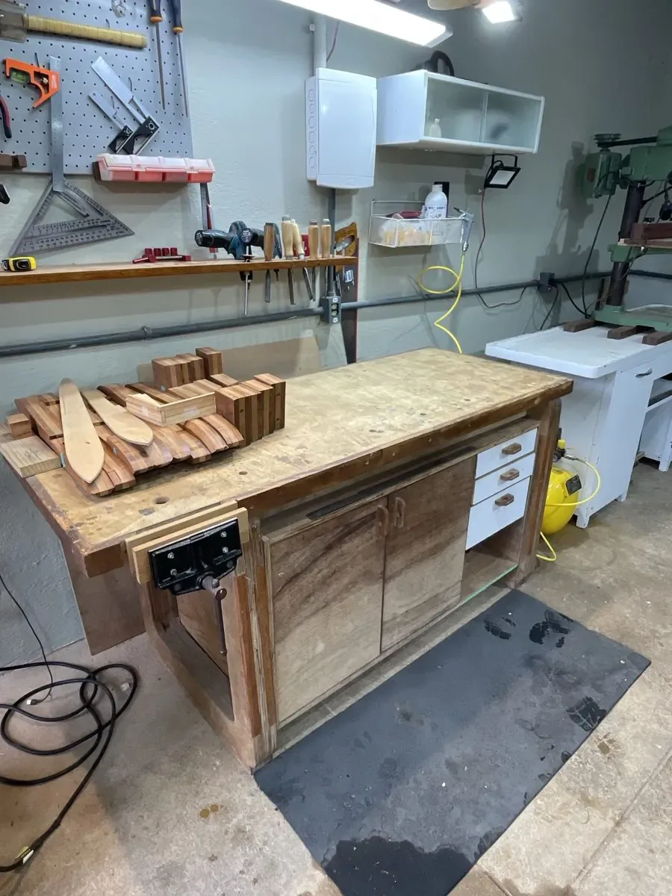
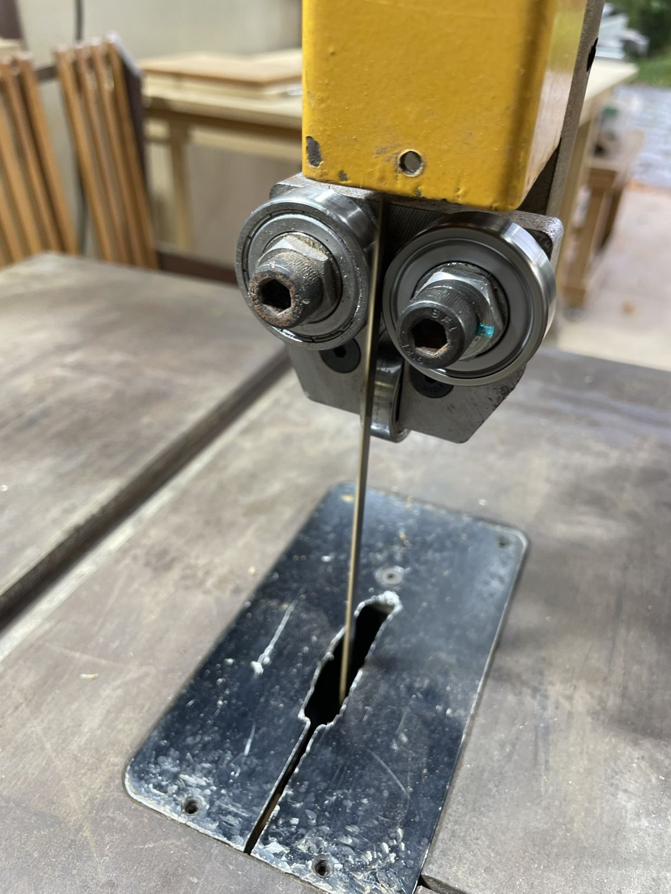
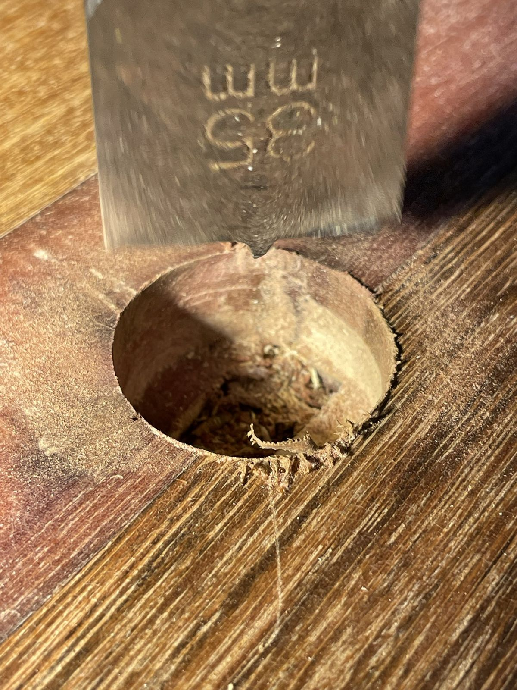

Galeria
A oficina, as ferramentas e algumas peças, ainda com cheiro de serragem. Toque numa foto para abrir o artigo relacionado.
 A oficina vista do fundo
A oficina vista do fundo
A bancada, primeira decisão da oficina Entrada: serra de bancada e apoios
Entrada: serra de bancada e apoios Mesa móvel para colagem
Mesa móvel para colagem
Guias de rolamento da serra de fita
O conserto da tábua da madeira albina Lâmina, guias e mesa
Lâmina, guias e mesa Fim do curso no ateliê de Morito Ebine, com o banquinho feito em aula
Fim do curso no ateliê de Morito Ebine, com o banquinho feito em aula A lingueta de caixeta revelada
A lingueta de caixeta revelada Rolamento lateral e rolamento de encosto
Rolamento lateral e rolamento de encosto Broca chata de 35 mm
Broca chata de 35 mm